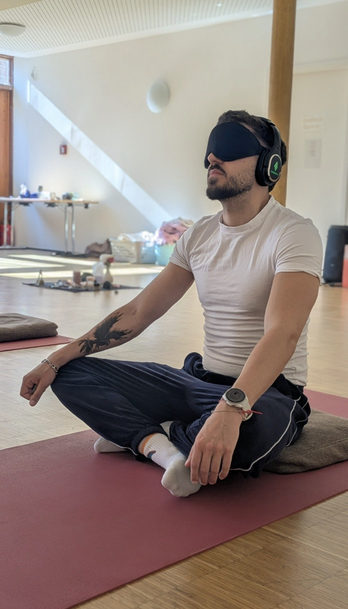
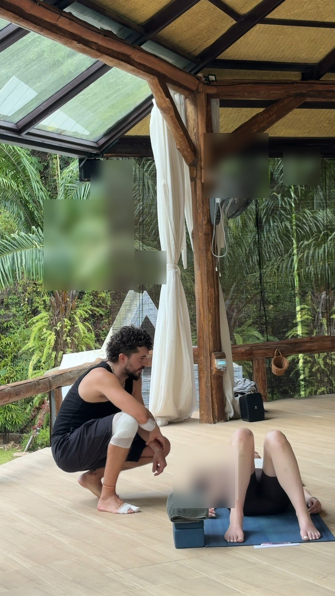
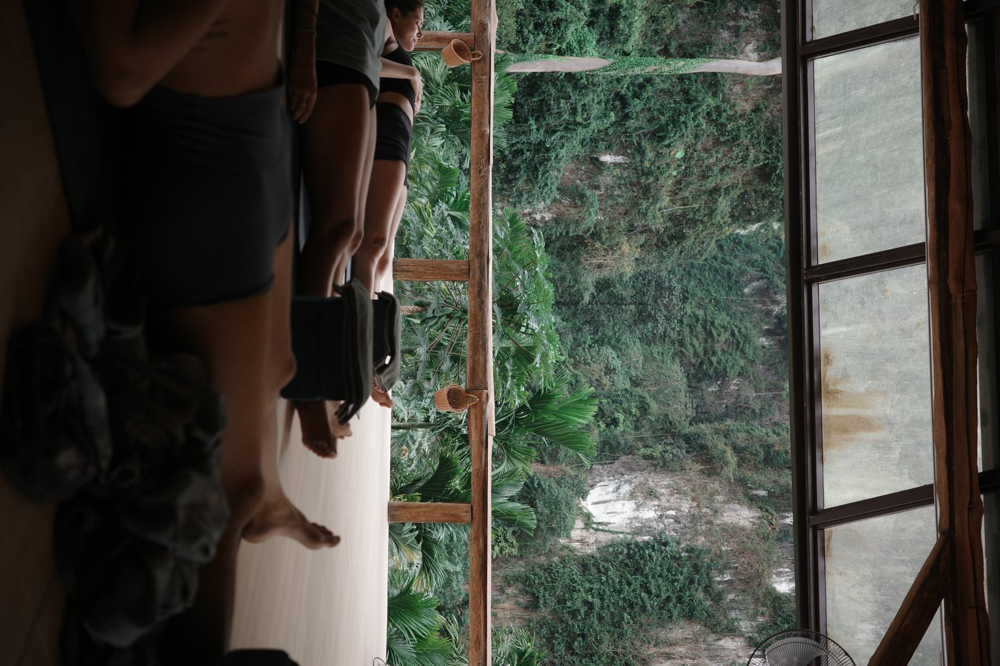
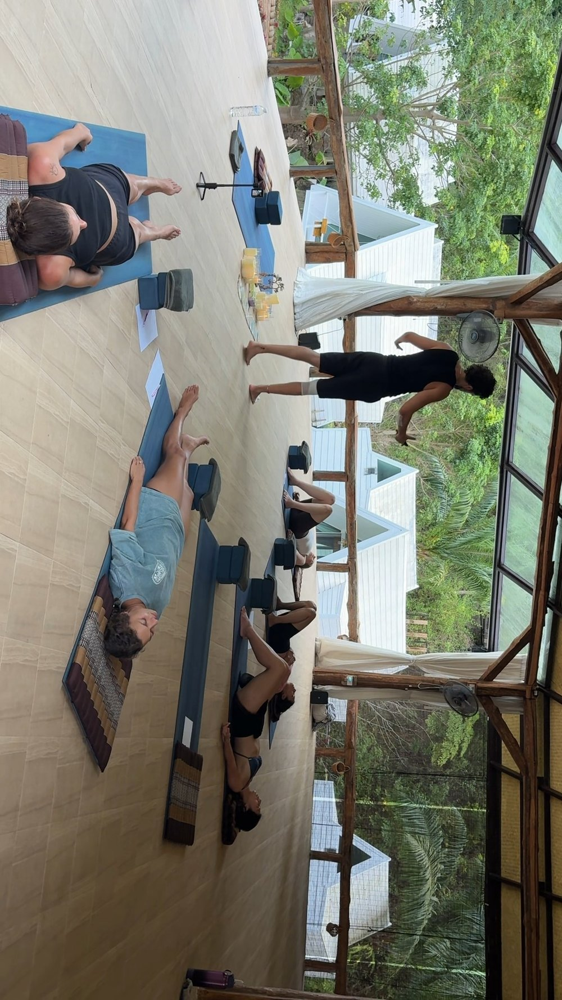

Zertifizierter Holosomatic Breathwork Therapeut
Ausgebildet bei InnerCamp, Malaga.
Manchmal reicht Reden nicht mehr. Manchmal braucht dein Körper einen anderen Weg, um loszulassen, was du zu lange festgehalten hast. Genau dafür ist Breathwork da.

Du hast schon viel verstanden über dich selbst – verändert hat sich trotzdem wenig. Reden allein reicht nicht mehr, die Antwort sitzt tiefer als im Kopf. Du trägst Anspannung mit dir rum, die du nicht mal richtig benennen kannst – und sehnst dich nach einem Moment, in dem du wirklich loslassen kannst.
Angefangen hat's bei mir mit Wim Hof – wie bei den meisten. Irgendwann hab ich mir so ein YouTube-Video angeschaut und geführte Atmung ausprobiert. Hat sich gut angefühlt im Körper. Aber wirklich einordnen konnte ich's noch nicht.
Der eigentliche Wendepunkt kam dann in Mexiko. Ich wollte mir alternative und östliche Medizin mal aus der Nähe anschauen – und ehrlich gesagt auch die ganzen spirituellen Themen, auf die ich da getroffen bin. Wenn Menschen seit Tausenden von Jahren, in völlig unterschiedlichen Kulturen, davon erzählen wie krass sich dadurch was verändert – dann wollt ich einfach selbst rausfinden, ob da was dran ist.
Da hab ich zum ersten Mal Holotropes Atmen gemacht. Was da passiert ist, kann ich schwer in Worte fassen. Jahre an Anspannung, Angst, Zweifel – Sachen, die selbst nach viel Therapie nie ganz weg waren – haben sich einfach gelöst. Wie ein Schalter, der umgelegt wurde. Ich hab mich verbunden gefühlt. Mit mir selbst, mit der Natur, mit den Menschen um mich rum – mit irgendwas Größerem, keine Ahnung wie man's nennen soll.

Ehrlich gesagt: Als ich wieder zu Hause in meinem Alltag war und weniger geatmet hab, sind einige der alten Themen zurückgekommen. Ich bin nicht komplett geheilt. Ich hab immer noch meine Themen, ab und zu auch depressive Phasen. Aber das Atmen hilft mir immer wieder zurück auf die Beine.
Zurück in Deutschland bin ich dann zu einem Event von InnerCamp gegangen. Am nächsten Tag stand meine Entscheidung: Ausbildung machen. Zwei Wochen später saß ich im Flieger nach Malaga.
Seitdem bin ich zertifizierter Holosomatic Breathwork Therapeut – und ich geb genau das weiter, was mir selbst am meisten geholfen hat.
Zugang zu deinem Unterbewusstsein – dahin, wo Verstand und Kontrolle im Alltag normalerweise den Weg versperren.
Emotionale Blockaden lösen, die sich mit reinem Reden und Verstehen oft einfach nicht bewegen.
Altes verarbeiten – Bilder, Erinnerungen und Gefühle aus der Vergangenheit dürfen hochkommen und dann auch wirklich gehen.
Glaubenssätze sichtbar machen, die dich unbewusst seit Jahren steuern.
Dein Körper darf rauslassen, was er die ganze Zeit festgehalten hat – zittern, schreien, weinen, alles darf sein.
Echte Verbindung spüren – zu dir selbst, zu deinem Körper, zu dem was gerade wirklich da ist.
Ein Zustand von Klarheit und Verbindung, der oft noch Tage nachwirkt.
Bewusste, verbundene Atmung verändert das Verhältnis von Sauerstoff und Kohlendioxid in deinem Blut – und beeinflusst darüber direkt dein autonomes Nervensystem. Nach der Polyvagal-Theorie (Porges) hat dein Nervensystem verschiedene Zustände: Kampf-oder-Flucht, Shutdown, und einen Zustand von sozialer Sicherheit und Verbindung. Bewusste Atemarbeit kann helfen, gezielt zwischen diesen Zuständen zu wechseln.
Studien zeigen außerdem, dass intensives Atmen die Aktivität im sogenannten Default Mode Network verlangsamt – dem Hirnnetzwerk, das für Grübeln, Selbstkritik und das ständige Gedankenkarussell zuständig ist. Wenn dieses Netzwerk leiser wird, entsteht Raum: für Klarheit, für Zugang zu Dingen, die sonst im Hintergrund laufen.
Gleichzeitig verschiebt sich deine Gehirnwellenaktivität hin zu Alpha- und Theta-Wellen – Zustände, die auch bei Meditation auftreten und mit Entspannung, Intuition und einem Gefühl tiefer Verbundenheit in Verbindung gebracht werden.
Gemeinsam in der Gruppe, online. Jede Session hat ihr eigenes Thema – mal geht's um inneres Kind, mal ums Rauslassen von Emotionen, mal einfach nur darum, nach einer stressigen Woche zur Ruhe zu kommen. Wir aktivieren sanft, nie zu tief – und finden dann bewusst zurück in die Ruhe. Das Thema kündige ich vorher immer in der Story an. Auch online entsteht in der Gruppe oft eine Nähe, die man nicht erwarten würde.

Das brauchst du für zuhause
Augenmaske · Kopfhörer · eine Decke · und wenn du magst einen persönlichen Gegenstand, der dir Sicherheit gibt
Die tiefe Reise, ganz auf dich zugeschnitten. Im Vorgespräch schauen wir gemeinsam, welche Richtung für dich gerade dran ist:

Ganz unterschiedlich – und das ist normal. Manche zittern, manche weinen, manche werden richtig laut. Andere spüren Kribbeln, Wärme oder ein Ziehen im Brustkorb. Manchmal fühlen sich Hände oder Füße kurzzeitig taub oder wie gelähmt an – das ist eine bekannte, ungefährliche Reaktion, die nach spätestens 10–15 Minuten von selbst wieder vergeht. Es gibt kein Richtig oder Falsch – dein Körper macht genau das, was er gerade braucht.
Auch das ist völlig okay. Manche Menschen erleben eine Session eher ruhig und körperlich – ohne große emotionale Welle. Das heißt nicht, dass "nichts passiert ist". Manchmal kommt die Verarbeitung erst später, in den Tagen danach, oder durch Träume.
Nein. Ich leite dich durch die ganze Session, du musst nichts vorher können oder wissen.
Das ist ein völlig normales Gefühl, gerade beim ersten Mal. Du bestimmst jederzeit dein eigenes Tempo – du kannst die Atmung jederzeit verlangsamen oder pausieren.
Viele beschreiben ein Gefühl von Leichtigkeit, Klarheit oder Erschöpfung – manchmal auch beides. Plan dir danach nach Möglichkeit etwas Ruhe ein.
Intensive Atemtechniken haben eine starke Wirkung auf Körper und Psyche – deshalb sind sie nicht für jeden geeignet. Bitte lies dir das in Ruhe durch.
Bitte nicht teilnehmen ohne vorherige ärztliche Absprache bei:
Bitte vorher kurz mit mir sprechen bei:
Direkt vor der Session:
Diese Liste ersetzt kein ärztliches Gespräch. Bist du unsicher, sprich vorher mit deinem Arzt oder deiner Ärztin ab, ob Breathwork für dich geeignet ist – oder schreib mir einfach, dann klären wir es gemeinsam.
Zertifizierter Holosomatic Breathwork Therapeut
Ausgebildet bei InnerCamp, Malaga.
Schreib mir einfach – ob Gruppen-Reset oder 1:1, ich meld mich mit den nächsten Terminen bei dir.
Auf Instagram schreiben →